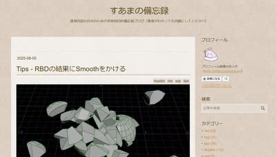
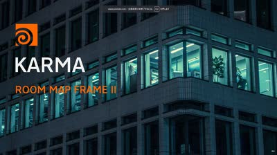
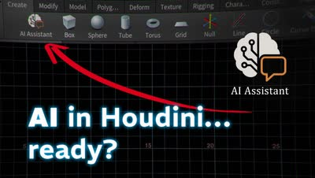
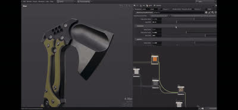

記事・リンクを検索
⌘K
108 件のポスト
Spade&Co. 木川裕太氏による個人制作「Island」の技術解説記事。
Houdiniを用いたモデリングからレンダリングまでの背景制作ワークフローを体系的に学べるコース。

Houdini内でプロシージャルに植生を生成できるツールキット「Natsura」。インポート/エクスポートの手間がなく高品質で、いわば「SpeedTreeのHoudini完結版」だとしている。KTT（Gaea相当）同様、Houdini内で完結するツールが増えている傾向にも触れている。

SideFXでインターンをしているLei W.氏による、COPsを使ったSci-fi Panelの制作手法。Pythonでレイアウトをデザインし、COPsでHeightとディテールを追加、Houdini Engine経由でUEに渡し、Naniteでテッセレーション・ディスプレイスメントを実装するワークフロー。

Samuel Krug氏によるチュートリアル「How I Created a Massive Coastal Mountain Scene in 3D」。技術的な側面だけでなく、書籍の描写を基にした再現や試行錯誤の過程も見られる点をおすすめしている。

蒸留スイ氏の記事を参考に、Claude MCPを使ってプロシージャルなビル生成セットアップ。機能ごとに許諾が必要な点が煩わしく、思ったより時間がかかったという率直な所感が記されている。

Houdiniでガウシアン・スプラッティングにRigを組んでアニメーションさせる無料チュートリアル「Animate Gaussian Splats with Houdini」。無料のシーンファイルも配布されている。

塚島氏によるPLATEAU（3D都市モデル）とHoudiniを組み合わせた映像作品のチュートリアル。ミニチュアルックの再現方法などが紹介されており面白い内容。

ILMやDNEGでの勤務経験を持つSteven Corman氏が、Double Jump Academyで新しい背景制作チュートリアル「Advanced Matte Painting」をリリースしたこと。使用ソフトはHoudini、Maya、Gaea、Nuke、Photoshop。

HoudiniとPythonを組み合わせた画像処理の活用事例。WebのURLから画像を読み込み、Pillowを使って画素をポイントとして並べる手法などが紹介されている。プラグイン開発以外の応用例として挙げている。

実地形生成HDAの正式リリース。アメリカ国内では1m/pixelまたは10m/pixel、世界中では30m/pixelの解像度で地形を生成できる。SplatmapsはMeta SAM AIかカスタムのPython HDAで生成できる。

Houdiniの基本原則を扱うYouTubeプレイリスト「Principled Houdini」。

「Displace along normal」を使ってUV展開済みメッシュにディスプレイスメントを加える際、UVをvertexからpointにpromoteしてVOPで編集する必要があるというTips。

鈴木氏の許可を得て、公開されているHoudiniファイルから参考になった点をまとめたnote記事「Houdiniファイルを読み解く vol.1」。

HoudiniとUE5を使って精緻な蓮（Lotus）のシーンを制作した過程を解説する80lvの記事。ArtStationにも制作ブレイクダウンが公開されている。

岡崎昇平氏による、地形生成以外のHeight Fieldの変わった使い方を紹介する記事。Height Fieldが軽量でUVも扱いやすく、booleanのshatterに適しているという点が勉強になった。

プロダクションで働き始めパイプラインやワークフローに興味を持つ中で参考になった記事「Houdini Workflowについて」（@_ShoHey_氏）。難しすぎず、ためになる内容だった。

ポリフォニー・デジタルによるこれまでの講演記事がまとめられたページ。Houdiniや Pythonに関する有料級の記事を無料で読める。

SideFX Labsの「Labs Lot Subdivision」を使った作例。パラメータの説明や知られていない機能・使い方も紹介されている。

Labs Lot Subdivisionについて、建物の区画作成やレンガパターン、植物・木の配置など、思いつかなかった応用アイデアが多くあり面白いという感想。
Mapbox代替となるような、実際の地形を生成するHDA。Heightfieldを使わずCOPsワークフローをベースに、AI「Meta SAM」で高精度なスプラットマップ（マスク用テクスチャ）を自動生成する仕組み。OpenTopographyから標高・衛星データを取得する。

Matt Barker氏による、リファレンス写真からHoudiniでScatterする手法。写真をカメラプロジェクションし、そこにScatterして写真の色をポイントに持たせ、木のタイプに応じてポイントをソートするという3ステップの流れが解説されている。

テクスチャアーティストMax Kutsenko氏による作品「Wooden Roof Shingles」。Houdiniでプロシージャルに屋根と煙突を生成し、UEでシェーディング・ライティングまで行う手法。特にSubstance Designerでノイズから強弱グラフを生成しマスクとして使う手法が興味深いと評している。

『アサシンクリード シャドウズ』で使用された、2Dマスクから3Dモデルを生成するHDA「Procedural Rock Wall Tool」。写真から岩壁のマスクを作り、Houdiniでディテールを追加後、Zbrushでさらにディテールを足すワークフローが採用されていたと推測している。

プロシージャルモデリングで使える様々なテクニックをまとめた動画「All* the Procedural Modeling tricks in one video」。何ができるか知ることで引き出しが増えるという考えも添えている。

木の葉のレンダリング時間を、Geometry（16秒）、Stencil（27秒）、Opacity/Texture（2分35秒）の3手法で比較検証。Solarisでは、Scatterする場合はAlphaでモデルをカットアウトし、それ以外はOpacityなしで使うのが最適ではないかと考察している。

鱗（うろこ）を生成できるHoudini用HDA「Scales」。

崖に草を生やすマスクを作成する際、Normalマスクだけでなく AOマスクも併用することで、よりリアルな結果が得られるというTips。

ComfyUIを使い、1枚のフレームから360度アニメーションを生成する手法。Gaussian SplattingとHoudiniも併用することで精度が向上する。Miguel Angel Arribas Sánchez氏による手法。

HoudiniのVEXを使ったプロシージャルな木材シェーダーの作り方を解説する動画。

HoudiniのAtlas Texture Generatorについて解説する動画。

HoudiniのLOPsにおけるUSD Render Primsについて解説する動画。

HoudiniでのPythonの使い方を学べるサイト「Render Factory」。Python基礎、Houdini内でのPython、UI作成といったレッスンが用意されている。

Houdiniに関する有益なTipsがまとめられたGitHubリポジトリ「MysteryPancake/Houdini-Fun」。

Houdiniで便利なノードセットアップがまとめられているサイト「codercat」。

ILMやFramestoreで勤務経験のあるChristian Bohm氏によるHoudiniのチュートリアル。

HoudiniでPySideを使ったUIを作成する方法を解説する動画「Creating Pyside UI in Houdini」。

自身の作品制作を振り返り、\\\"Just make it exist first, you can make it good later\\\"という考え方に触れつつ、まず早い段階でスラップコンプ（ラフな合成）まで持っていくことの重要性。制作期間は静止画と合わせて16日弱だった。

Houdini×USDを使ってデジタルツインを生成し、自動運転シミュレーションに活用しているAurora Innovationの事例を紹介するCGWORLDの記事。同社には元Pixarのアーティストも在籍している。

流体シミュレーションツール「Axiom」を開発したMatt氏が、新しいソルバーをリリースした。

Houdiniのスナップショットを基にNano Bananaで画像を生成し、ComfyUIでHoudiniのFlipbookと組み合わせるワークフロー「3D to ComfyUI」。

HoudiniとComfyUIを連携させ、カメラプロジェクションを自動化するツール。

Adrien Lambert氏のチュートリアルに、Solaris、Copernicus、PDG/Topnet、VDBなどを扱う新しい内容が追加された。

Houdini Solarisで名前を使ってマテリアルをアサインする方法を解説した動画。

夏に開催された、すあま氏によるUSD-Solarisのセミナーの記事が公開された。

PixarのEnvironment Leadによる、USDについて解説した動画「USD Building Asset Pipelines」。

HoudiniでPythonを使い、Poly HeavenのHDRIブラウザーを作成するチュートリアル「VMT 064 Coding an Asset Browser」。
HoudiniのBiomes機能の使い方を解説する動画。

松の木を生成できるHoudini用HDA「Pine Tree Generator」が年内にリリース予定である。

Alex Toth氏によるSolarisとKarmaを使ったライティング・レンダリングのウェビナー「Master Lighting and Rendering in Houdini」。

HoudiniのHeightfieldの面白い活用方法を解説するチュートリアル「Hacking Heightfields」。

Adrien Lambert氏のSolarisチュートリアルが更新された。Gumroadでクーポンコード「AUTUMN」により30%オフになるとのこと（期間限定）。

V-Ray for Houdiniでのディスプレイスメント適用方法についてのTips。単一のDisplacementならobj階層でマテリアルをアサインし、複数のDisplacement Mapを使う場合はsop階層でPackしてからマテリアルをアサインする、という手順を解説している。

斎藤晃氏によるプロシージャルモデリングの講演動画「Procedural Hard Surface Design」（Houdini Hive Japan、Part1・Part2）。

Houdiniを使ってプロシージャルに道路網を生成するチュートリアル。

HoudiniのデータをBlenderに変換するアドオン。

HoudiniのInstanceに必要な知識を解説する動画（全3パート）。丁寧な説明が特徴。

HoudiniのTipsがまとめられた、すあま氏のブログ。

KarmaのRoomMap機能を使って部屋の中をテクスチャで再現するチュートリアル。

幻想的な世界の環境制作を学べるコース「3D Environments: Create Otherworldly Fantasy Lands」。最終レンダリングはClarisseだが、Maya・Houdini・Nukeについても学べる内容。

Houdiniを使って映画『君の名は。』のPVの背景をフル3Dで再現した制作過程を解説するnote記事。まだ全部読めていないが、試行錯誤の過程が勉強になるとしている。

Houdini用プラグイン「OD Tool」。Asset LibraryやテクスチャをExplorerからドラッグ＆ドロップできるなど、多くの機能を備えている。

スクウェア・エニックスによる、Houdini×UE4を使ったプロシージャル背景制作の記事「Procedural Environment『1,000の和室』」。

『Hogwarts Legacy』や『Diablo』に携わったJunliang Zhang氏による、HoudiniとUE4を組み合わせたプロシージャル環境制作の記事。

元Pixarのエンジニアである手島孝人氏によるCEDEC講演「ピクサー USD 入門 新たなコンテンツパイプラインを構築する」のスライド。

HoudiniでVEXを書く際のサポートツール「VEX Manager」。

Houdiniで「Alt+Shift+M」を押すとキャッシュマネージャーが開けるというショートカットTips。

作品「Whispers of the Forgotten Temple」の制作プロセスを解説したブレイクダウン。Houdiniが様々な箇所で使用されている。

HoudiniのVEXを学びたい人向けに、Junichiro Horikawa氏のYouTubeチャンネル。

Yen Chen氏のArtStationページ。クオリティの高い背景作品が多く掲載されている。

ILMのGeneralist、Yen Chen氏が自身の作品制作に使用したHDA「CH Tools」を無料公開していること。Scatterに重要な機能が多く含まれている。

HoudiniでのPythonの使い方を学べるチュートリアル動画「How not to suck at Python」。制作を効率化するスクリプトを自分で書けるようになったと、自身の学習体験にも触れている。

Ivy Tamingプラグインの使い方を、Adrien Lambert氏が丁寧に解説した動画。

HoudiniでIvy（ツタ）を生成できるHDA「Ivy Taming 1.1」。『The Last of Us』などハリウッドのプロダクションでも使用されている。

個人制作でSolarisを使いたい人向けのチュートリアル「LOPs for Solo Artists」。

Adrien Lambert氏による、マスクを作成できるHoudini用HDA「AL MASKBUILDER」。ScatterやShadingで使えるマスク作成機能が詰まっている。

HoudiniのInstanceについて体系的に理解するのに役立った記事「An Even Longer-Winded Guide to Instancing in Houdini」。

Samuel A Krug氏による地形生成HDA「KTT for Houdini」。従来のHoudiniやGaeaでは難しい表現が可能になるとしている。

HoudiniでのLattice操作を簡単にするHDA「Lattice_B for Houdini」。

Houdini Solaris向けのライティングテンプレート。単一ショット用だけでなく複数ショット用のテンプレートもある。

OpacityMapを使ってメッシュをカットアウトできるプラグイン「YL Atlas Cutter」。

MegascansのアセットをUSDに変換し、LookDevまで行えるHoudini用のHDAツール。

HoudiniのAIアシスタント（LinkedInで紹介）。デバッグやノード・パラメーターの分析を行ってくれる。

安藤恵美氏によるUSD/Solarisについての講演動画。2018年のものだが、USDの基本概念の理解が深まる内容。

ILMロンドン所属のGeneralist、Yen Chen氏による作品の制作プロセス。使用ソフトはHoudini、Nuke、および（現在は使用できない）Clarisse。

80lvに掲載された、『The Witcher 3』に着想を得た雪景色シーンの制作記事。大規模な自然系背景制作に役立つTipsがまとめられており、使用ソフトはUnreal Engineがメイン。

SyntaXcg氏がHoudiniで2つのシーンを制作するプロセスを解説したチュートリアル。スキャッターやプロシージャルなセットアップ、Substance Painterを使った水面のテクスチャリングなど、それぞれ異なるポイントにフォーカスしている。

Steffen Hampel氏による、「Japanese Alley」という作品を制作するWingfoxのチュートリアル。MayaとV-Rayがメインに使用されている。

SpeedTreeでアニメーションやシミュレーションを行えるプラグイン。

HoudiniでMegascansのAtlas機能を使って葉っぱのアセットを作成する手法。この手法はゲーム『アサシンクリード』でも使用されている。Megascansは葉っぱ系アセットの種類が少ないため、こうしたテクニックが役立つとしている。
Houdiniを用いたモデリングからレンダリングまでの背景制作ワークフローを体系的に学べるGnomonのチュートリアル。ILMの山田瑞希氏やSpadeの木川裕太氏もこのチュートリアルで学んだ。

背景制作に定評のあるBaptiste氏が制作した作品のBlenderファイル。

自動的にリグを作成してくれるBlenderのアドオン。まだWIP段階だが、無料でダウンロード可能。

HoudiniのCOPsを使ったテクスチャリングのチュートリアル動画。1時間の動画で斧のテクスチャ制作を解説している。
Lucas Piazzini氏の作品。Rampage Rallyというコンテストで3位に入賞した作品。

ILMのJunior GeneralistであるLucas Piazzini氏のXアカウント。ArtStationで背景制作について詳しく解説されている。

Double Jump Academyで公開されている、William氏によるHoudiniを使った背景制作のチュートリアル「Epic Environments」と「Environments for Beginners」。

HoudiniのLOPsとSolarisについて詳しくまとめられた英語記事（cgwiki）。

Adrien Lambert氏のSolarisチュートリアルにInstancerを使う内容が追加され、Part4まで公開されている。

同じチュートリアルの追加パートについて、SpeedTreeのLookDevからScatterまでをカバーしている点。

Blizzard Entertainment所属のAdrien Lambert氏による、Houdini SolarisでのUSD・環境制作ワークフローを学べるサブスクリプション形式のチュートリアル。月額約400円で視聴可能。

HDR Converter（Windows専用）とHDRI Manager for 3ds Max, Maya and Houdiniという、2つの無料HDRI関連プラグイン。

80lvに掲載された記事と、RebelwayでEnvironment Creation in Houdiniコースを担当するJames Hodgart氏。

Houdiniを使った環境アート制作について、穏やかな漁村シーンのセットアップを例に解説する80lvの記事。

大規模な2D環境をHoudiniとNukeを使って3Dで再現する手法を解説した80lvの記事。

80lvに掲載された、Houdiniを使った背景制作ワークフローの記事。地形生成から建物配置、USDでのコンポジションまで解説されている。

背景制作に欠かせないScatterツール。木川氏の記事を基に、いくつか機能を追加して作成した。詳細はNotionページにまとめられている。
「Houdini × 背景制作 Tips&Tutorials」のNotionページ。特に参考になったコースとして、Gnomon Workshopの「Creating Procedural Environments in Houdini」（モデリングからレンダリングまで学べる）を推薦している。